predictor split RSS
1 Years 1.5 5.371093
2 Years 2.5 4.396926
3 Years 3.5 3.459744
4 Years 4.5 3.397360
5 Years 5.5 3.998963
6 Years 6.5 4.528329
7 Years 7.5 5.015692
8 Years 8.5 5.160630
9 Years 9.5 5.441011
10 Years 10.5 5.549537
11 Years 11.5 5.717716
12 Years 12.5 5.779519
13 Years 13.5 6.017264
14 Years 14.5 6.180344
15 Years 15.5 6.228585
16 Years 16.5 6.238226
17 Years 17.5 6.263735
18 Years 18.5 6.295138
19 Years 19.5 6.297833
20 Years 22.0 6.284817
21 Hits 2.5 6.227453
22 Hits 15.5 6.210460
23 Hits 29.5 6.267218
24 Hits 34.5 6.292269
25 Hits 38.0 6.296987
26 Hits 39.5 6.258108
27 Hits 40.5 6.221868
28 Hits 41.5 6.117778
29 Hits 42.5 6.162232
30 Hits 43.5 6.127846
31 Hits 45.0 6.128328
32 Hits 46.5 6.095667
33 Hits 48.0 6.108631
34 Hits 50.0 6.120371
35 Hits 51.5 6.066072
36 Hits 52.5 6.105733
37 Hits 53.5 6.011732
38 Hits 54.5 5.894460
39 Hits 55.5 5.948283
40 Hits 56.5 5.871224
41 Hits 57.5 5.836472
42 Hits 59.0 5.790090
43 Hits 60.5 5.740105
44 Hits 62.0 5.732392
45 Hits 63.5 5.740384
46 Hits 64.5 5.675512
47 Hits 65.5 5.709179
48 Hits 67.0 5.648360
49 Hits 68.5 5.593724
50 Hits 69.5 5.592256
51 Hits 70.5 5.654370
52 Hits 71.5 5.605030
53 Hits 72.5 5.567728
54 Hits 73.5 5.504112
55 Hits 74.5 5.540488
56 Hits 75.5 5.505728
57 Hits 76.5 5.473642
58 Hits 77.5 5.534621
59 Hits 79.0 5.495257
60 Hits 80.5 5.526392
61 Hits 81.5 5.497471
62 Hits 82.5 5.462044
63 Hits 83.5 5.512501
64 Hits 84.5 5.554221
65 Hits 85.5 5.556012
66 Hits 86.5 5.499711
67 Hits 88.5 5.442760
68 Hits 90.5 5.455674
69 Hits 91.5 5.448321
70 Hits 92.5 5.399763
71 Hits 93.5 5.367207
72 Hits 94.5 5.445048
73 Hits 95.5 5.390645
74 Hits 96.5 5.372025
75 Hits 98.0 5.351532
76 Hits 100.0 5.286660
77 Hits 101.5 5.280756
78 Hits 102.5 5.215843
79 Hits 103.5 5.095537
80 Hits 105.0 5.128264
81 Hits 107.0 5.165339
82 Hits 108.5 5.082224
83 Hits 109.5 5.023407
84 Hits 111.0 5.093273
85 Hits 112.5 5.075512
86 Hits 113.5 5.058192
87 Hits 114.5 5.070028
88 Hits 115.5 5.060329
89 Hits 116.5 5.082123
90 Hits 117.5 4.951691
91 Hits 118.5 4.960297
92 Hits 119.5 5.055826
93 Hits 121.0 5.000380
94 Hits 122.5 5.011493
95 Hits 123.5 5.112514
96 Hits 124.5 5.128384
97 Hits 125.5 5.193194
98 Hits 126.5 5.220114
99 Hits 127.5 5.258931
100 Hits 128.5 5.328320
101 Hits 129.5 5.354354
102 Hits 130.5 5.362508
103 Hits 131.5 5.432370
104 Hits 132.5 5.441132
105 Hits 134.0 5.466626
106 Hits 135.5 5.453692
107 Hits 136.5 5.533691
108 Hits 137.5 5.558262
109 Hits 138.5 5.470874
110 Hits 139.5 5.458108
111 Hits 140.5 5.424153
112 Hits 141.5 5.472159
113 Hits 143.0 5.451446
114 Hits 144.5 5.497305
115 Hits 145.5 5.453744
116 Hits 146.5 5.480040
117 Hits 147.5 5.542276
118 Hits 148.5 5.616462
119 Hits 149.5 5.585710
120 Hits 150.5 5.618275
121 Hits 151.5 5.681251
122 Hits 153.0 5.655225
123 Hits 155.5 5.686073
124 Hits 157.5 5.696370
125 Hits 158.5 5.732919
126 Hits 159.5 5.771076
127 Hits 160.5 5.819672
128 Hits 162.0 5.831730
129 Hits 165.0 5.913516
130 Hits 167.5 5.878046
131 Hits 168.5 5.943581
132 Hits 169.5 5.992036
133 Hits 170.5 6.054076
134 Hits 171.5 6.120273
135 Hits 173.0 6.079299
136 Hits 175.5 6.118865
137 Hits 177.5 6.153522
138 Hits 178.5 6.168823
139 Hits 181.0 6.175956
140 Hits 183.5 6.192442
141 Hits 185.0 6.202358
142 Hits 192.0 6.232277
143 Hits 199.0 6.256697
144 Hits 203.5 6.278593
145 Hits 208.5 6.296776
146 Hits 210.5 6.261997
147 Hits 212.0 6.276003
148 Hits 218.0 6.264215
149 Hits 230.5 6.232610Tree-based Methods
Introduction to Statistical Learning - PISE
Aldo Solari
Ca’ Foscari University of Venice
This unit will cover the following topics:
- Regression Trees
- Bagging
- Random Forests
- Boosting
Regression Trees
Tree-based methods involve stratifying or segmenting the predictor space into a number of simple regions.
Since the set of splitting rules used to segment the predictor space can be summarized in a tree, these types of approaches are known as decision-tree methods.
Pros and Cons
Tree-based methods are simple and useful for interpretation.
However they typically are not competitive with the best supervised learning approaches in terms of prediction accuracy.
Hence we also discuss bagging, random forests, and boosting. These methods grow multiple trees which are then combined to yield a single consensus prediction.
Combining a large number of trees can often result in dramatic improvements in prediction accuracy, at the expense of some loss interpretation.
Baseball salary data: how would you stratify it?
Log Salary is color-coded from low (blue, green) to high (yellow,red)
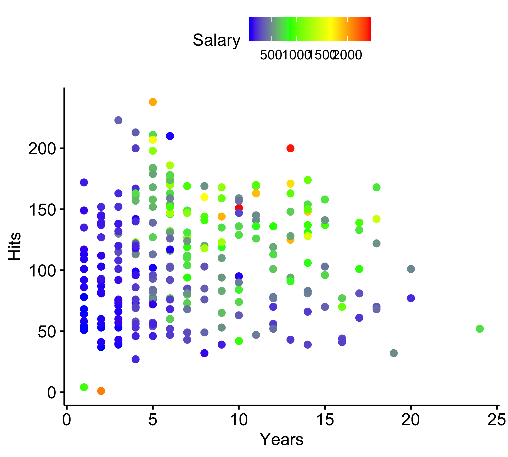
Decision tree for these data (ISL Figure 8.1)
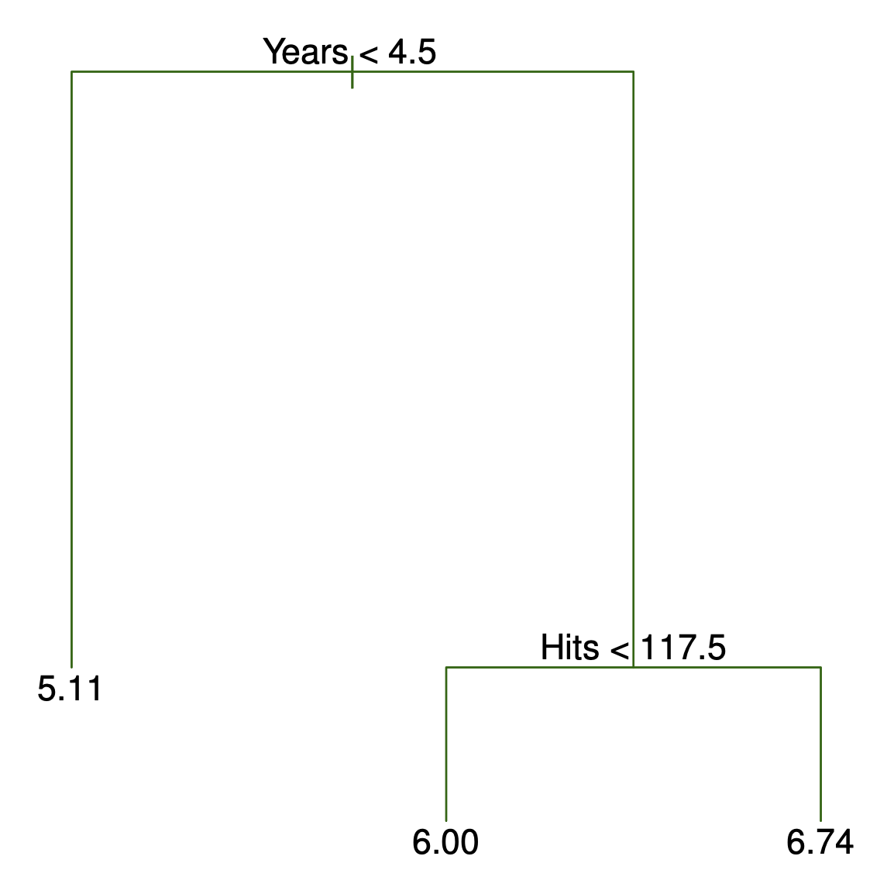
Details of previous figure
For the Hitters data, a regression tree for predicting the log salary of a baseball player, based on the number of years that he has played in the major leagues and the number of hits that he made in the previous year.
At a given internal node, the label (of the form X_j < t_k ) indicates the left-hand branch emanating from that split, and the right-hand branch corresponds to X_j \geq t_k . For instance, the split at the top of the tree results in two large branches. The left-hand branch corresponds to
Years<4.5, and the right-hand branch corresponds toYears>=4.5.The tree has two internal nodes and three terminal nodes, or leaves. The number in each leaf is the mean of the response for the observations that fall there.
Results (ISL Figure 8.2)
Overall, the tree stratifies or segments the players into three regions of predictor space: R_1 =\{X | Years<4.5 \}, R_2 =\{X | Years>=4.5, Hits<117.5 \}, and R_3 =\{X | Years>=4.5, Hits>=117.5 \}.
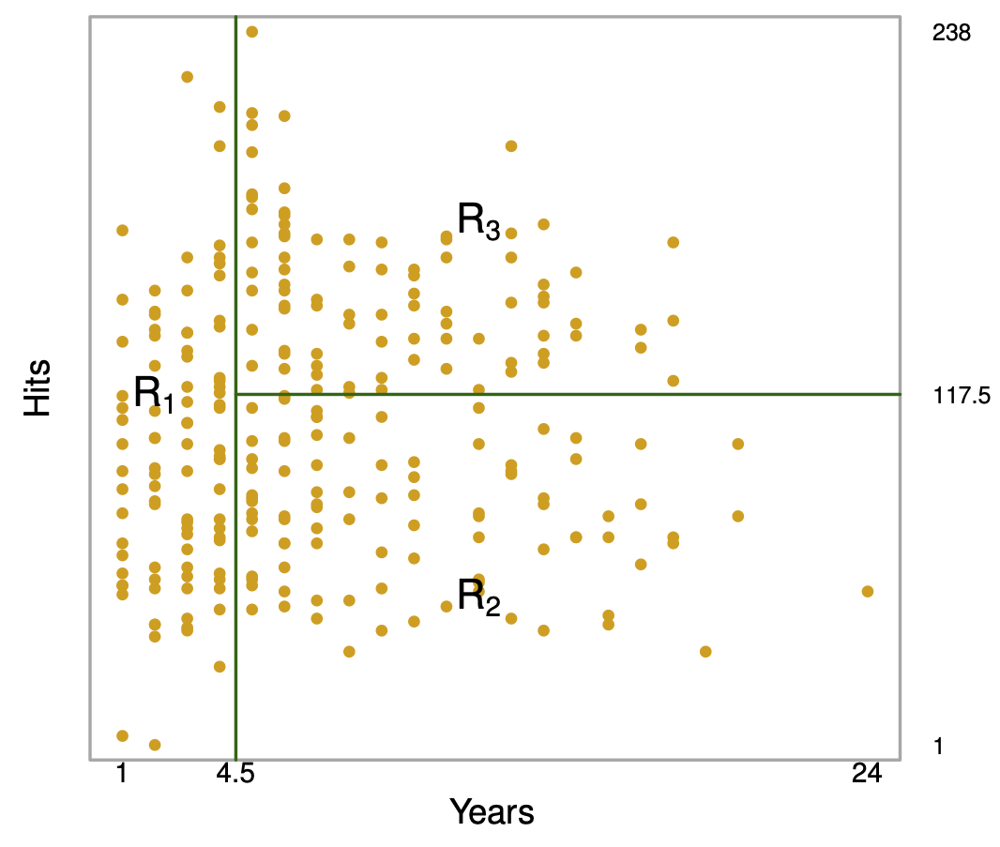
Terminology for Trees
In keeping with the tree analogy, the regions R_1, R_2, and R_3 are known as terminal nodes
Decision trees are typically drawn upside down, in the sense that the leaves are at the bottom of the tree.
The points along the tree where the predictor space is split are referred to as internal nodes
In the hitters tree, the two internal nodes are indicated by the text
Years<4.5 andHits<117.5.
Interpretation of Results
Yearsis the most important factor in determiningSalary, and players with less experience earn lower salaries than more experienced players.Given that a player is less experienced, the number of
Hitsthat he made in the previous year seems to play little role in his Salary.But among players who have been in the major leagues for five or more years, the number of
Hitsmade in the previous year does affectSalary, and players who made moreHitslast year tend to have higher salaries.Surely an over-simplification, but compared to a regression model, it is easy to display, interpret and explain
Details of the tree-building process
Partition the predictor space (all values of X_1,\ldots,X_p) into J disjoint regions R_1,\ldots,R_J.
In each region R_j, predict with a constant: \hat{y}_{R_j} = \frac{1}{|R_j|} \sum_{i \in R_j} y_i
Choose the regions to minimize the residual sum of squares (RSS): \sum_{j=1}^{J} \sum_{i \in R_j} (y_i - \hat{y}_{R_j})^2
In practice, exhaustively searching over all possible partitions is computationally infeasible. Instead,
- restrict regions to axis-aligned rectangles
- build the partition using recursive binary splitting (top-down, greedy)
Interpretation:
- each region = a group of similar observations
- prediction = average response within that group
- each region = a group of similar observations
Recursive binary splitting
Top-down: start with the full dataset and successively split it into smaller regions.
Greedy: at each step, choose the split that gives the largest immediate reduction in RSS.
At each step, select a predictor X_j and split point s that divides a region into: R_1(j,s) = \{X \mid X_j < s\}, \quad R_2(j,s) = \{X \mid X_j \ge s\}.
Choose (j,s) to minimize: \text{RSS}(j,s) = \sum_{i \in R_1(j,s)} (y_i - \hat{y}_{R_1})^2 + \sum_{i \in R_2(j,s)} (y_i - \hat{y}_{R_2})^2.
In practice:
- sort each predictor
- evaluate splits at midpoints between consecutive values
- select the split with smallest RSS
Recursive binary splitting — continued
After the first split, we obtain two regions R_1 and R_2.
Next, we split one of these regions further.
For R \in \{R_1, R_2\}, define: R_L(j,s;R) = \{X \in R \mid X_j < s\}, \quad R_R(j,s;R) = \{X \in R \mid X_j \ge s\}.
Choose R, j, and s to minimize the total RSS after the split:
\sum_{i \in R_L(j,s;R)} (y_i - \hat{y}_L)^2 + \sum_{i \in R_R(j,s;R)} (y_i - \hat{y}_R)^2 + \sum_{i \in R^c} (y_i - \hat{y}_{R^c})^2, where R^c is the region not split.
- Repeat until a stopping rule is met (e.g., minimum node size).
Baseball example
Baseball example continued
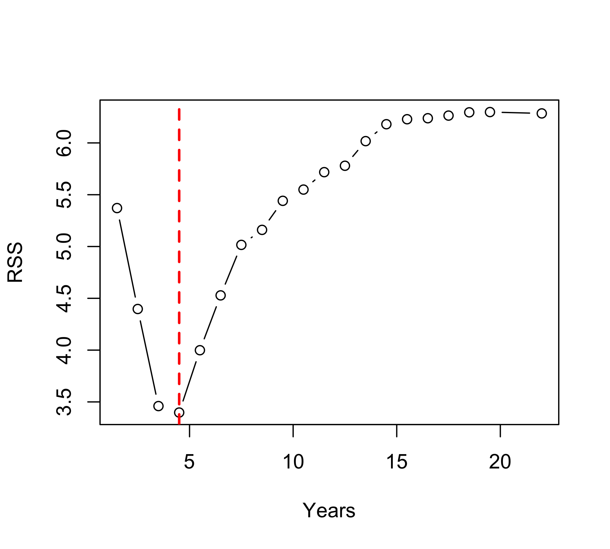
Baseball example continued
Left region (Years < 4.50): n = 90, mean log-Salary = 1.622Right region (Years >= 4.50): n = 173, mean log-Salary = 1.844
Interpretation:The split at Years = 4.50 creates two regions.The left region contains 90 players and is assigned the prediction 1.622.The right region contains 173 players and is assigned the prediction 1.844.Because the response is log(Salary), these are predicted mean log-salaries in the two regions.Baseball example continued
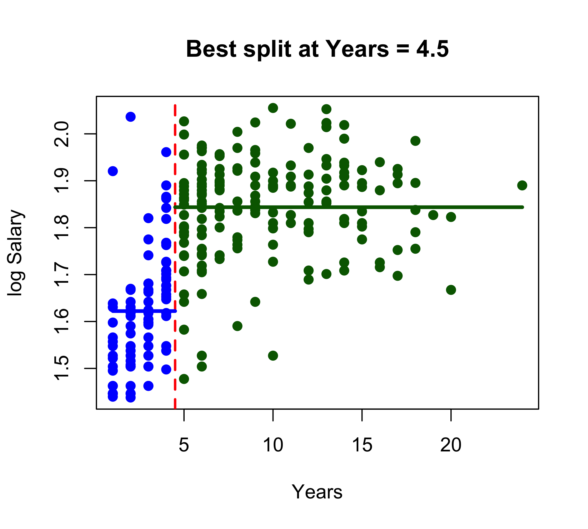
Baseball example continued
region predictor split region_RSS total_RSS
1 Left Years 1.5 1.319332 3.261867
2 Left Years 2.5 1.207432 3.149967
3 Left Years 3.5 1.112303 3.054837
4 Left Hits 2.5 1.281382 3.223916
5 Left Hits 15.5 1.195274 3.137809
6 Left Hits 32.0 1.261950 3.204485
7 Left Hits 38.0 1.369151 3.311686
8 Left Hits 39.5 1.418755 3.361290
9 Left Hits 40.5 1.439334 3.381869
10 Left Hits 42.0 1.454823 3.397358
11 Left Hits 44.5 1.454490 3.397025
12 Left Hits 48.5 1.454743 3.397278
13 Left Hits 52.0 1.450571 3.393106
14 Left Hits 53.5 1.436085 3.378620
15 Left Hits 55.0 1.404618 3.347153
16 Left Hits 56.5 1.403503 3.346038
17 Left Hits 57.5 1.402668 3.345203
18 Left Hits 59.0 1.407750 3.350285
19 Left Hits 62.0 1.394341 3.336875
20 Left Hits 65.0 1.376087 3.318622
21 Left Hits 67.0 1.361891 3.304426
22 Left Hits 68.5 1.337789 3.280323
23 Left Hits 69.5 1.356119 3.298653
24 Left Hits 70.5 1.369962 3.312497
25 Left Hits 72.0 1.358715 3.301249
26 Left Hits 74.0 1.337515 3.280050
27 Left Hits 75.5 1.335522 3.278057
28 Left Hits 77.0 1.349370 3.291905
29 Left Hits 79.5 1.324547 3.267081
30 Left Hits 81.5 1.299983 3.242518
31 Left Hits 84.0 1.288557 3.231092
32 Left Hits 86.5 1.292939 3.235474
33 Left Hits 89.0 1.273747 3.216282
34 Left Hits 91.5 1.265881 3.208416
35 Left Hits 92.5 1.245869 3.188403
36 Left Hits 94.5 1.244122 3.186657
37 Left Hits 96.5 1.261724 3.204258
38 Left Hits 98.0 1.271392 3.213927
39 Left Hits 100.0 1.247694 3.190229
40 Left Hits 102.0 1.234213 3.176748
41 Left Hits 105.5 1.193858 3.136392
42 Left Hits 108.5 1.186047 3.128582
43 Left Hits 110.5 1.168522 3.111057
44 Left Hits 112.5 1.157854 3.100388
45 Left Hits 113.5 1.174403 3.116938
46 Left Hits 114.5 1.214848 3.157383
47 Left Hits 116.0 1.236536 3.179071
48 Left Hits 117.5 1.220602 3.163136
49 Left Hits 119.0 1.215231 3.157766
50 Left Hits 121.0 1.216359 3.158894
51 Left Hits 122.5 1.243324 3.185859
52 Left Hits 125.0 1.306566 3.249101
53 Left Hits 128.5 1.311264 3.253799
54 Left Hits 131.0 1.341955 3.284490
55 Left Hits 133.5 1.348074 3.290609
56 Left Hits 136.0 1.347069 3.289604
57 Left Hits 137.5 1.346365 3.288900
58 Left Hits 138.5 1.334082 3.276617
59 Left Hits 139.5 1.328692 3.271226
60 Left Hits 141.0 1.331225 3.273760
61 Left Hits 143.0 1.305769 3.248304
62 Left Hits 144.5 1.298338 3.240873
63 Left Hits 147.0 1.286423 3.228958
64 Left Hits 150.5 1.266658 3.209193
65 Left Hits 154.5 1.263775 3.206310
66 Left Hits 159.0 1.317537 3.260071
67 Left Hits 162.0 1.365265 3.307800
68 Left Hits 165.0 1.412458 3.354992
69 Left Hits 169.5 1.414429 3.356963
70 Left Hits 186.0 1.403780 3.346315
71 Left Hits 206.5 1.409318 3.351853
72 Left Hits 218.0 1.431238 3.373773
73 Right Years 5.5 1.890172 3.344997
74 Right Years 6.5 1.862262 3.317088
75 Right Years 7.5 1.899725 3.354551
76 Right Years 8.5 1.894117 3.348943
77 Right Years 9.5 1.918929 3.373755
78 Right Years 10.5 1.910833 3.365658
79 Right Years 11.5 1.926658 3.381484
80 Right Years 12.5 1.917794 3.372620
81 Right Years 13.5 1.941244 3.396070
82 Right Years 14.5 1.939608 3.394433
83 Right Years 15.5 1.937982 3.392808
84 Right Years 16.5 1.940613 3.395439
85 Right Years 17.5 1.940793 3.395619
86 Right Years 18.5 1.935372 3.390198
87 Right Years 19.5 1.934844 3.389670
88 Right Years 22.0 1.940362 3.395188
89 Right Hits 35.5 1.905647 3.360472
90 Right Hits 40.0 1.853547 3.308372
91 Right Hits 41.5 1.836484 3.291309
92 Right Hits 42.5 1.870942 3.325768
93 Right Hits 43.5 1.837118 3.291943
94 Right Hits 45.0 1.821850 3.276676
95 Right Hits 46.5 1.785473 3.240298
96 Right Hits 48.0 1.769784 3.224610
97 Right Hits 50.5 1.754470 3.209296
98 Right Hits 52.5 1.756907 3.211732
99 Right Hits 53.5 1.763409 3.218234
100 Right Hits 54.5 1.750200 3.205025
101 Right Hits 55.5 1.783477 3.238302
102 Right Hits 56.5 1.734586 3.189412
103 Right Hits 58.5 1.713946 3.168771
104 Right Hits 60.5 1.729375 3.184200
105 Right Hits 62.0 1.706809 3.161635
106 Right Hits 64.0 1.697793 3.152618
107 Right Hits 65.5 1.710242 3.165068
108 Right Hits 67.0 1.689751 3.144577
109 Right Hits 69.0 1.638327 3.093153
110 Right Hits 71.0 1.619347 3.074173
111 Right Hits 72.5 1.569242 3.024068
112 Right Hits 73.5 1.584380 3.039205
113 Right Hits 75.0 1.600044 3.054870
114 Right Hits 76.5 1.559086 3.013912
115 Right Hits 77.5 1.550198 3.005024
116 Right Hits 79.0 1.546833 3.001659
117 Right Hits 80.5 1.559109 3.013935
118 Right Hits 81.5 1.546203 3.001029
119 Right Hits 82.5 1.541340 2.996165
120 Right Hits 83.5 1.539928 2.994753
121 Right Hits 84.5 1.547334 3.002160
122 Right Hits 87.5 1.518498 2.973323
123 Right Hits 90.5 1.514591 2.969416
124 Right Hits 91.5 1.529982 2.984807
125 Right Hits 92.5 1.535315 2.990141
126 Right Hits 93.5 1.522493 2.977319
127 Right Hits 94.5 1.544159 2.998985
128 Right Hits 95.5 1.481903 2.936729
129 Right Hits 98.5 1.473359 2.928185
130 Right Hits 101.5 1.494732 2.949557
131 Right Hits 102.5 1.408901 2.863727
132 Right Hits 103.5 1.362936 2.817762
133 Right Hits 105.0 1.374593 2.829419
134 Right Hits 108.0 1.390211 2.845036
135 Right Hits 111.0 1.399984 2.854809
136 Right Hits 112.5 1.410489 2.865315
137 Right Hits 114.5 1.410618 2.865444
138 Right Hits 116.5 1.413036 2.867861
139 Right Hits 117.5 1.340177 2.795003
140 Right Hits 118.5 1.369027 2.823853
141 Right Hits 119.5 1.399491 2.854316
142 Right Hits 121.0 1.401063 2.855888
143 Right Hits 122.5 1.398414 2.853239
144 Right Hits 123.5 1.424181 2.879007
145 Right Hits 124.5 1.422297 2.877122
146 Right Hits 125.5 1.459717 2.914542
147 Right Hits 126.5 1.452736 2.907561
148 Right Hits 127.5 1.480455 2.935281
149 Right Hits 128.5 1.508295 2.963120
150 Right Hits 130.0 1.515504 2.970330
151 Right Hits 131.5 1.531565 2.986390
152 Right Hits 132.5 1.546970 3.001796
153 Right Hits 134.0 1.554371 3.009197
154 Right Hits 135.5 1.560725 3.015551
155 Right Hits 136.5 1.586109 3.040935
156 Right Hits 138.0 1.608953 3.063779
157 Right Hits 140.0 1.607801 3.062627
158 Right Hits 141.5 1.606954 3.061780
159 Right Hits 143.0 1.630102 3.084927
160 Right Hits 144.5 1.670967 3.125793
161 Right Hits 145.5 1.664383 3.119209
162 Right Hits 146.5 1.671245 3.126071
163 Right Hits 147.5 1.681078 3.135903
164 Right Hits 148.5 1.710290 3.165116
165 Right Hits 149.5 1.715615 3.170440
166 Right Hits 150.5 1.726839 3.181665
167 Right Hits 151.5 1.757708 3.212534
168 Right Hits 153.0 1.766136 3.220962
169 Right Hits 155.5 1.767103 3.221928
170 Right Hits 157.5 1.755593 3.210419
171 Right Hits 158.5 1.759961 3.214787
172 Right Hits 159.5 1.755237 3.210062
173 Right Hits 161.5 1.778057 3.232882
174 Right Hits 165.5 1.815637 3.270463
175 Right Hits 168.5 1.830561 3.285387
176 Right Hits 169.5 1.835031 3.289856
177 Right Hits 170.5 1.857940 3.312766
178 Right Hits 172.5 1.884522 3.339348
179 Right Hits 175.5 1.893130 3.347956
180 Right Hits 177.5 1.906263 3.361089
181 Right Hits 178.5 1.908438 3.363264
182 Right Hits 181.0 1.905610 3.360435
183 Right Hits 183.5 1.908464 3.363290
184 Right Hits 185.0 1.906777 3.361603
185 Right Hits 192.0 1.919686 3.374512
186 Right Hits 199.0 1.929488 3.384314
187 Right Hits 203.5 1.942069 3.396894
188 Right Hits 208.5 1.938267 3.393093
189 Right Hits 210.5 1.916370 3.371196
190 Right Hits 224.5 1.908858 3.363683Best second split: Split the Right region Predictor: Hits Split point: 117.50 Region RSS after split: 1.340 Total RSS after second split: 2.795Predictions
For a new observation, predict using the mean response in its region.
The model is a piecewise-constant function over the predictor space.
A five-region example of this approach is shown in the next slide.
ISL Figure 8.3
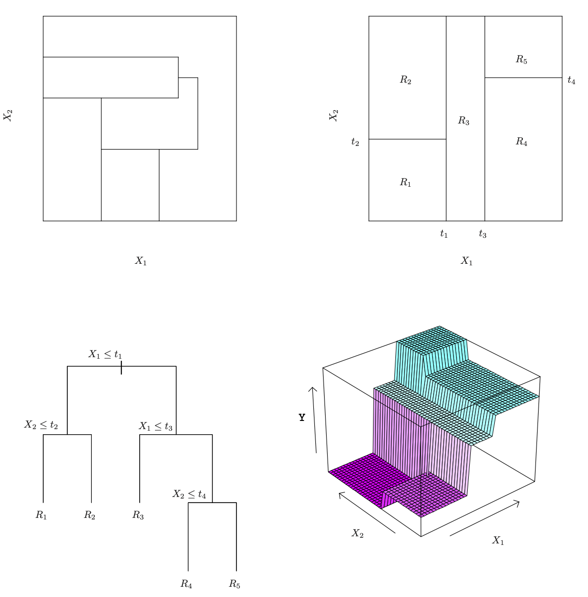
Details of previous figure
Top Left: A partition of two-dimensional feature space that could not result from recursive binary splitting.
Top Right: The output of recursive binary splitting on a two-dimensional example.
Bottom Left: A tree corresponding to the partition in the top right panel.
Bottom Right: A perspective plot of the prediction surface corresponding to that tree.
Pruning a tree
The process described above may produce good predictions on the training set, but is likely to overfit the data, leading to poor test set performance. Why?
A smaller tree with fewer splits (that is, fewer regions R_1,\ldots,R_J ) might lead to lower variance and better interpretation at the cost of a little bias.
One possible alternative to the process described above is to grow the tree only so long as the decrease in the RSS due to each split exceeds some (high) threshold.
This strategy will result in smaller trees, but is too short-sighted: a seemingly worthless split early on in the tree might be followed by a very good split — that is, a split that leads to a large reduction in RSS later on.
Pruning a tree - continued
A better strategy is to grow a very large tree T_0, and then prune it back in order to obtain a subtree
Cost complexity pruning — also known as weakest link pruning — is used to do this
we consider a sequence of trees indexed by a nonnegative tuning parameter \alpha. For each value of \alpha there corresponds a subtree T \subset T_0 such that \sum_{m=1}^{|T|} \sum_{i: x_i \in R_m}(y_i - \hat{y}_{R_m})^2 + \alpha |T| is as small as possible. Here |T| indicates the number of terminal nodes of the tree T, R_m is the rectangle (i.e. the subset of predictor space) corresponding to the mth terminal node, and \hat{y}_{R_m} is the mean of the training observations in R_m.
Choosing the best subtree
The tuning parameter \alpha controls a trade-off between the subtree’s complexity and its fit to the training data.
We select an optimal value \hat \alpha using cross-validation.
We then return to the full data set and obtain the subtree corresponding to \hat \alpha
Summary: tree algorithm
Use recursive binary splitting to grow a large tree on the training data, stopping only when each terminal node has fewer than some minimum number of observations.
Apply cost complexity pruning to the large tree in order to obtain a sequence of best subtrees, as a function of \alpha.
Use K-fold cross-validation to choose \alpha. For each k= 1,\ldots,K:
3.1 Repeat Steps 1 and 2 on the \frac{K−1}{K} th fraction of the training data, excluding the kth fold.
3.2 Evaluate the mean squared prediction error on the data in the left-out kth fold, as a function of \alpha. Average the results, and pick \alpha to minimize the average error.
Baseball example continued
First, we randomly divided the data set in half, yielding 132 observations in the training set and 131 observations in the test set.
We then built a large regression tree on the training data and varied \alpha in in order to create subtrees with different numbers of terminal nodes.
Finally, we performed six-fold cross-validation in order to estimate the cross-validated MSE of the trees as a function of \alpha.
- Return the subtree from Step 2 that corresponds to the chosen value of \alpha.
Baseball example continued (ISL Figure 8.4)
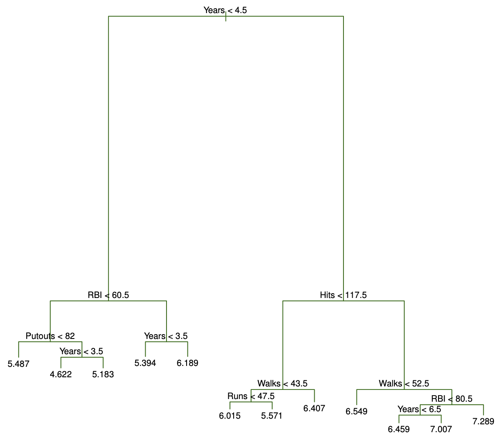
Baseball example continued (ISL Figure 8.5)
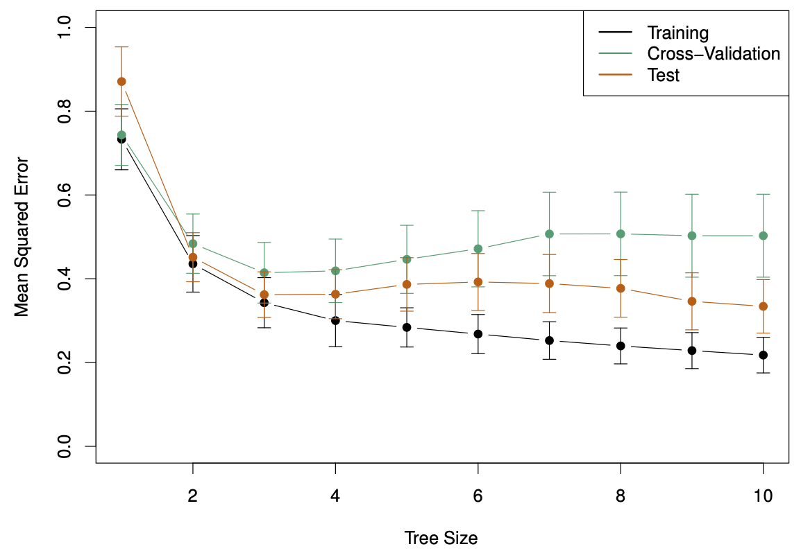
Advantages and Disadvantages of Trees
Trees are very easy to explain to people. In fact, they are even easier to explain than linear regression!
Some people believe that decision trees more closely mirror human decision-making than do the regression approach seen in previous chapters.
Trees can be displayed graphically, and are easily interpreted even by a non-expert (especially if they are small).
Trees can easily handle qualitative predictors without the need to create dummy variables.
Unfortunately, trees generally do not have the same level of predictive accuracy as some of the other regression and classification approaches seen in this book.
However, by aggregating many decision trees, the predictive performance of trees can be substantially improved. We introduce these concepts next.
ALS data
These data concern amyotrophic lateral sclerosis (Lou Gerig’s disease). There are 1822 observations (n=1197 training set and 625 test set) on individuals with ALS. See Kuffner et al. Nature Biotechnol. 33, 51–57; 2015
The goal is to predict the rate of progression
dFRSof a functional rating score, using p=369 predictors based on measurements (and derivatives of these) obtained from patient visits.These data can be read directly into R via the command
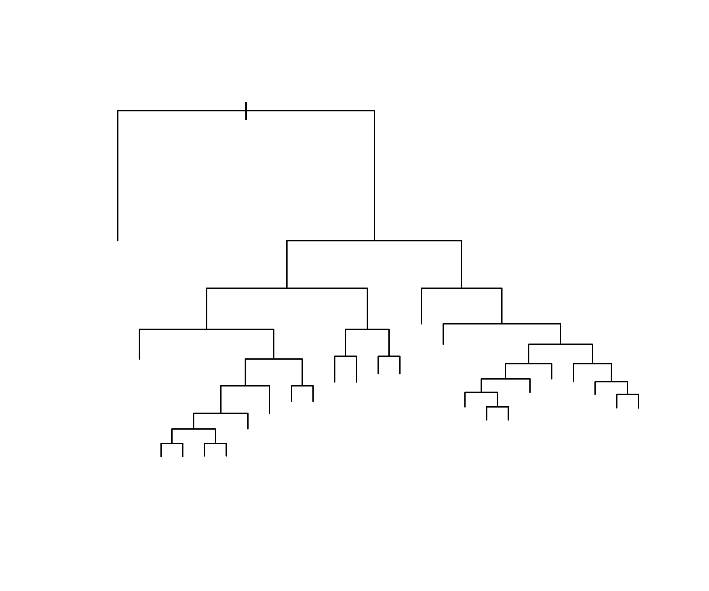
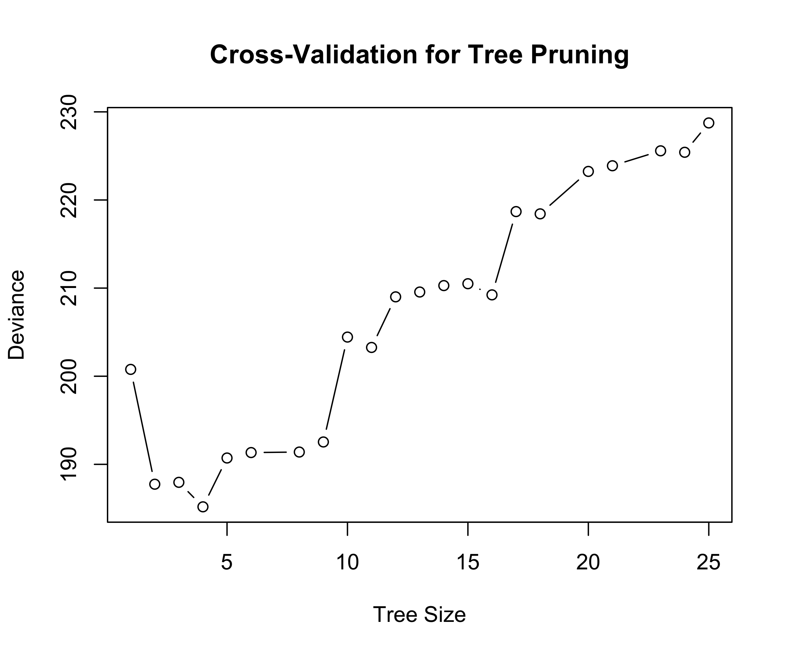
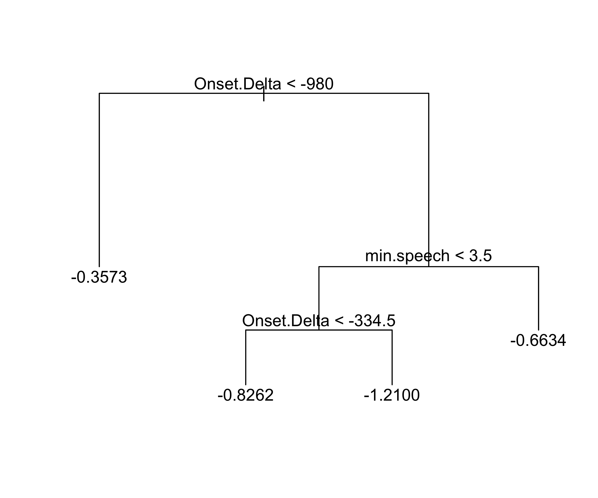
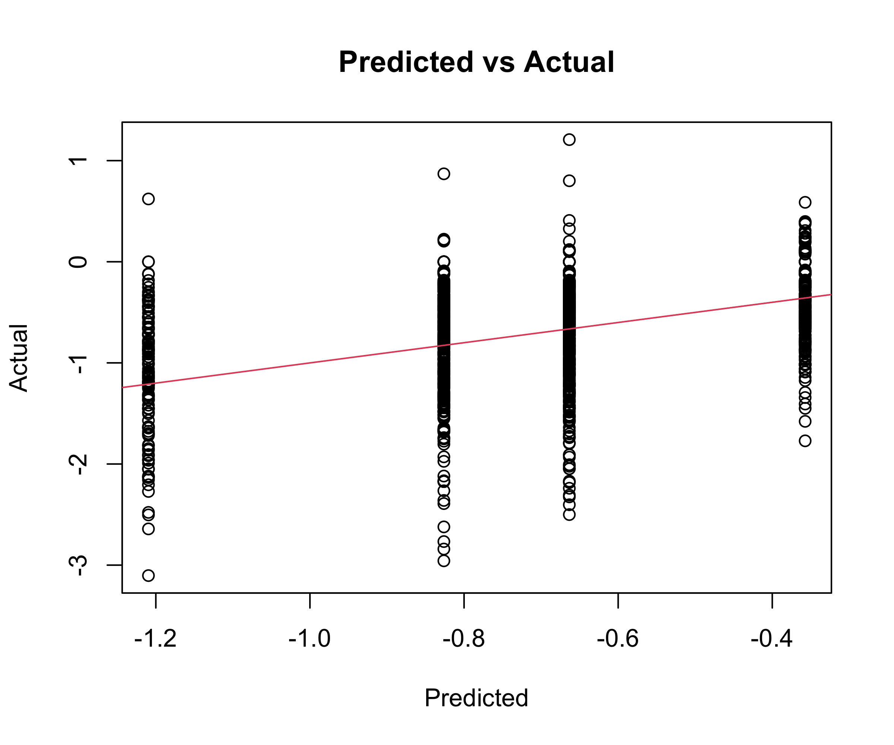
[1] "Test set MSE : 0.2788"Bagging
Bootstrap aggregation, or bagging, is a general-purpose procedure for reducing the variance of a statistical learning method; we introduce it here because it is particularly useful and frequently used in the context of decision trees.
Recall that given a set of n independent observations Z_1,...,Z_n, each with variance \sigma^2, the variance of the mean Z of the observations is given by \sigma^2/n.
In other words, averaging a set of observations reduces variance. Of course, this is not practical because we generally do not have access to multiple training sets.
Bagging - continued
Instead, we can bootstrap, by taking repeated samples from the (single) training data set.
In this approach we generate B different bootstrapped training data sets. We then train our method on the bth bootstrapped training set in order to get \hat f^{*_b}(x), the prediction at a point x. We then average all the predictions to obtain \hat f_{bag}(x) = \frac{1}{B} \sum_{b=1}^{B} \hat f^{*_b}(x). This is called bagging.
Bagging the ALS data
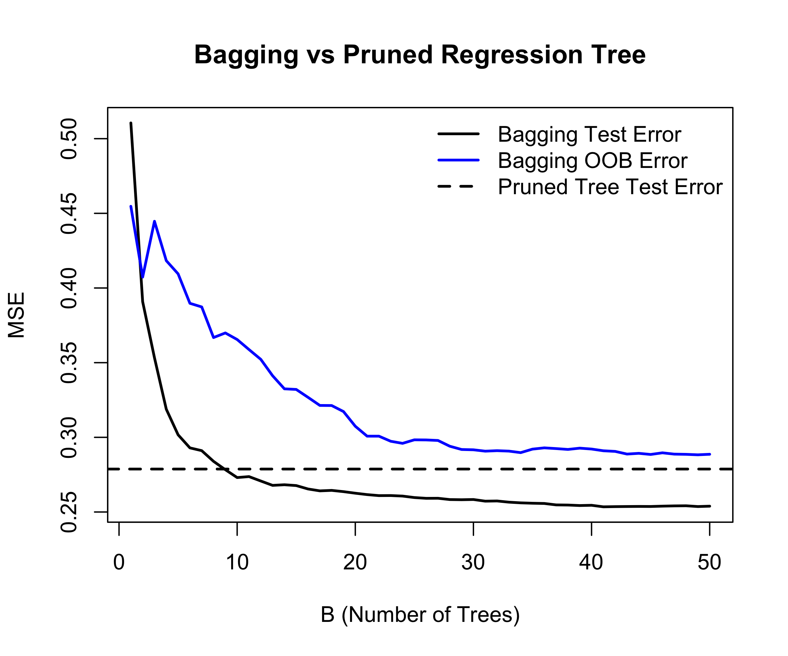
Details of previous figure
Bagging results for the ALS data.
The test error (black) is shown as a function of B, the number of bootstrapped training sets used.
The dashed line indicates the test error resulting from a single classification tree.
The blue traces show the OOB error, which in this case is considerably higher
Out-of-Bag Error Estimation
It turns out that there is a very straightforward way to estimate the test error of a bagged model.
Recall that the key to bagging is that trees are repeatedly fit to bootstrapped subsets of the observations. One can show that on average, each bagged tree makes use of around two-thirds of the observations.
The remaining one-third of the observations not used to fit a given bagged tree are referred to as the out-of-bag (OOB) observations.
We can predict the response for the ith observation using each of the trees in which that observation was OOB. This will yield around B/3 predictions for the ith observation, which we average.
This estimate is essentially the LOO cross-validation error for bagging, if B is large.
Boostrap Sample
A bootstrap sample of size n drawn from the training data is (\tilde x_1, \tilde y_1), \ldots, (\tilde x_n, \tilde y_n), where each pair (\tilde x_i, \tilde y_i) is selected independently and with replacement, uniformly at random from the original dataset (x_1, y_1), \ldots, (x_n, y_n),
In a bootstrap sample of size n, some observations appear multiple times, while others are not selected. For a single draw, the probability that a specific observation is not chosen is 1-\frac{1}{n}
After n draws (i.e., one bootstrap sample), the probability that a given observation is never selected is \Big(1-\frac{1}{n}\Big)^n \approx \frac{1}{e} \approx 0.368 for large n. Thus, about 1/3 of the training observations are left out of a given bootstrap sample
Variable Importance
How can we measure variable importance?
In bagging, and more generally random forests, a common approach is based on permuting predictors using the out-of-bag (OOB) data.
For each tree, the prediction error on its OOB sample is computed (OOB MSE). Then, for a given predictor, its values are randomly permuted in the OOB data and the prediction error is recomputed.
The increase in prediction error due to this permutation is averaged over all trees, and often normalized by the standard deviation of these increases.
This measures how much worse the model performs when the information in a variable is destroyed, i.e., it compares the model’s performance using the original variable versus a randomized version of it.
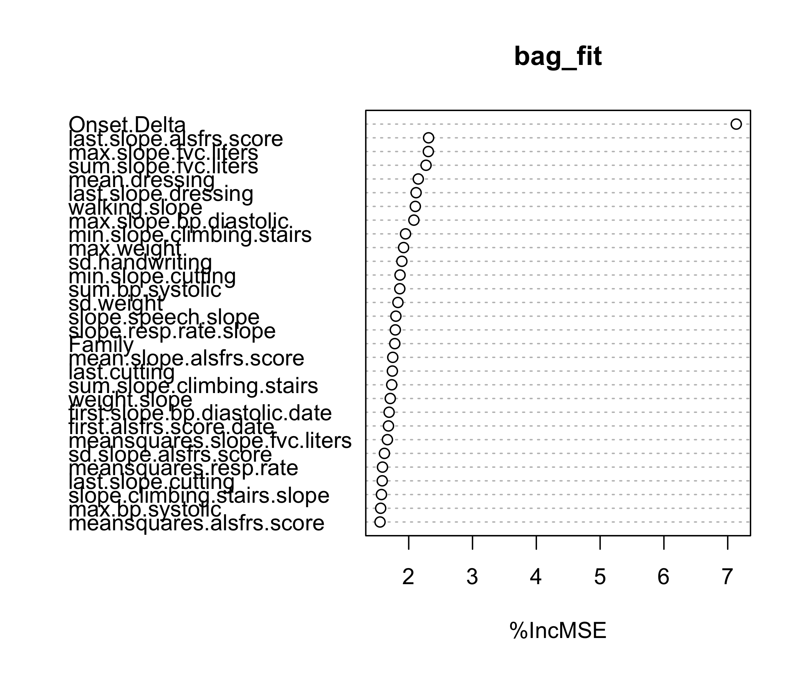
Random Forests
Random forests provide an improvement over bagged trees by way of a small tweak that decorrelates the trees. This reduces the variance when we average the trees.
As in bagging, we build a number of decision trees on bootstrapped training samples.
But when building these decision trees, each time a split in a tree is considered, a random selection of m predictors is chosen as split candidates from the full set of p predictors. The split is allowed to use only one of those m predictors.
A fresh selection of m predictors is taken at each split, and typically we choose m \approx \sqrt{p} — that is, the number of predictors considered at each split is approximately equal to the square root of the total number of predictors (19 out of the 369 for the ALS data).
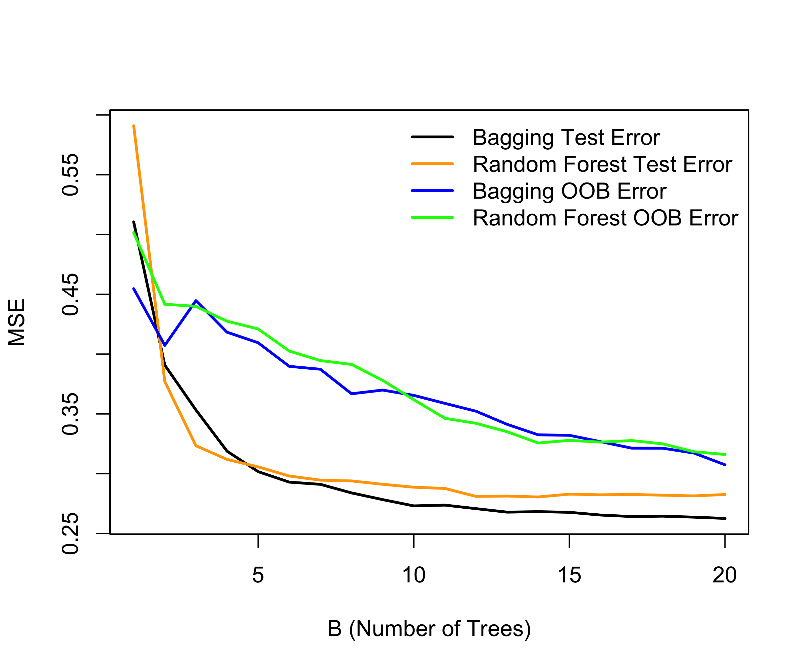
Boosting
Recall that bagging involves creating multiple copies of the original training data set using the bootstrap, fitting a separate decision tree to each copy, and then combining all of the trees in order to create a single predictive model.
Notably, each tree is built on a bootstrap data set, independent of the other trees.
Boosting works in a similar way, except that the trees are grown sequentially: each tree is grown using information from previously grown trees.
Boosting algorithm for regression trees
Set \hat f(x) = 0 and r_i = y_i for all i iin the training set
For b=1,\ldot,B, repeat:
2.1 Ft a tree \hat f^b with d splits (d+1 terminal nodes) to the training data (X,r)
2.2 Update \hat f by adding in a shrunken version of the new tree:
\hat f(x) \leftarrow \hat f(x) + \lambda \hat f^b(x) 2.3 Update the residuals
r_i \leftarrow r_i - \lambda \hat f^b(x_i)
Output the boosted model,
\hat f(x) = \sum_{b=1}^{B} \lambda \hat f^b(x)
Toy Example (B=50, d=1, \lambda =0.01)
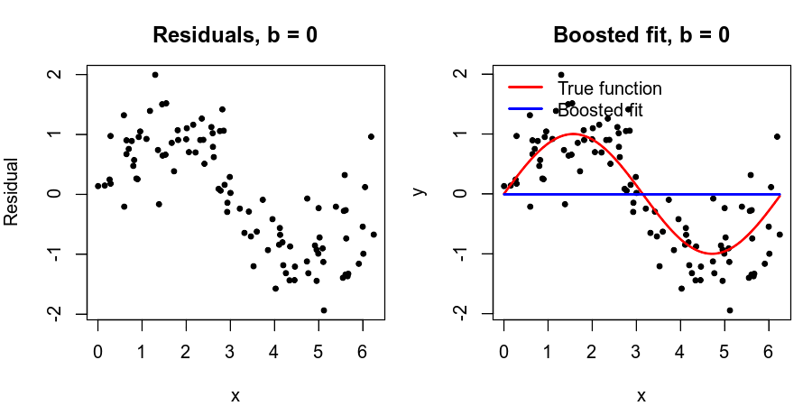
What is the idea behind this procedure?
Unlike fitting a single large decision tree to the data, which amounts to fitting the data hard and potentially overfitting, the boosting approach instead learns slowly.
Given the current model, we fit a decision tree to the residuals from the model. We then add this new decision tree into the fitted function in order to update the residuals.
Each of these trees can be rather small, with just a few terminal nodes, determined by the parameter d in the algorithm.
By fitting small trees to the residuals, we slowly improve \hat f in areas where it does not perform well. The shrinkage parameter \lambda slows the process down even further, allowing more and different shaped trees to attack the residuals.
Tuning parameters for boosting
The number of trees B. Unlike bagging and random forests, boosting can overfit if B is too large, although this overfitting tends to occur slowly if at all. We use cross-validation to select B.
The shrinkage parameter \lambda, a small positive number. This controls the rate at which boosting learns. Typical values are 0.01 or 0.001, and the right choice can depend on the problem. Very small \lambda can require using a very large value of B in order to achieve good performance.
The number of splits d in each tree, which controls the complexity of the boosted ensemble. Often d= 1 works well, in which case each tree is a stump, consisting of a single split and resulting in an additive model. More generally d is the interaction depth, and controls the interaction order of the boosted model, since d splits can involve at most d variables.
CASI, Figure 17.6
Efron and Hastie, 2016, Computer Age Statistical Inference, Cambridge University Press.
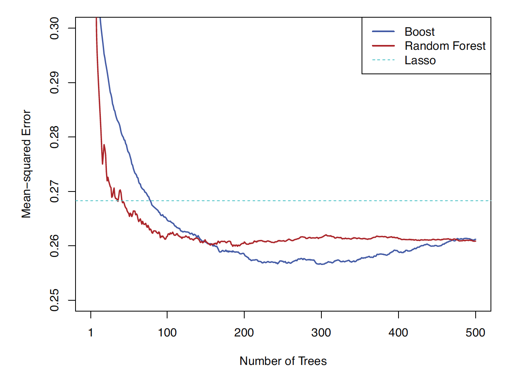
Figure 17.6. Test performance of a boosted regression-tree model fit to the ALS training data, with n = 1197 and p = 369. Shown is the mean squared error (MSE) on the 625 designated test observations as a function of the number of trees. The model uses tree depth d = 4 and shrinkage parameter \lambda = 0.02.
Boosting achieves a lower test MSE than a random forest. However, as the number of trees B becomes large, the test error for boosting begins to increase, indicating overfitting. In contrast, the random forest does not exhibit overfitting. The dotted blue horizontal line represents the best performance of a linear model fitted using the lasso. Note that the differences are less dramatic than they appear, since the vertical axis does not extend to zero.
CASI Figure 17.8
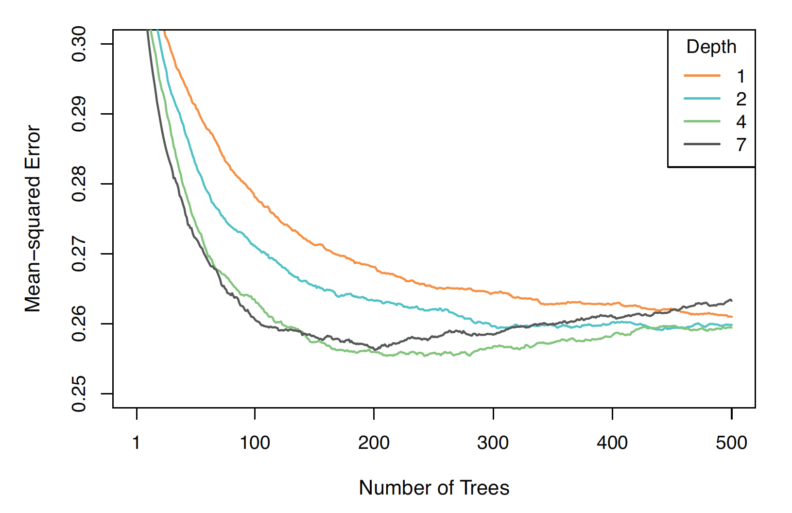
Figure 17.8. ALS test error for boosted models with different tree depths d, all using the same shrinkage parameter \lambda 00.02.
The model with d = 1 performs worse than the others, while ( d = 4 ) appears to perform best overall. For d = 7, overfitting begins at around 200 trees; for d = 4, it begins around 300 trees. The remaining models show no clear evidence of overfitting even up to 500 trees.
CASI Figure 17.6
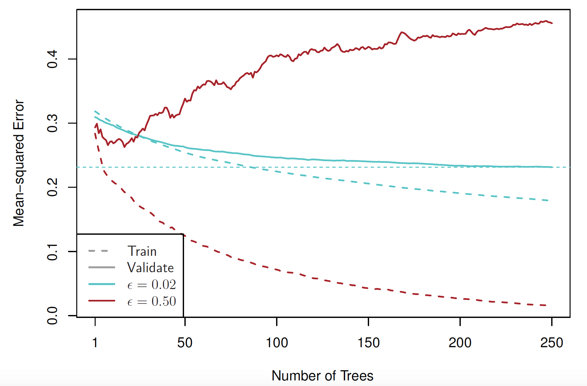
Figure 17.10. Boosted models with depth d = 3 and different shrinkage parameters, fitted to a subset of the ALS data. Solid curves show validation error, and dashed curves show training error. Red corresponds to \lambda = 0.5, and blue to \lambda = 0.02.
With \lambda = 0.5, the training error decreases rapidly as the number of trees increases, but the validation error rises quickly after an initial decline, indicating overfitting. With \lambda = 0.02 (25 times smaller), both training and validation errors decrease more gradually. However, the validation error reaches a lower minimum (indicated by the horizontal dotted line) than in the \lambda = 0.5 case. In this setting, slower learning leads to better generalization.
Summary
Decision trees are simple and interpretable models for regression
However they are often not competitive with other methods in terms of prediction accuracy
Bagging, random forests and boosting are good methods for improving the prediction accuracy of trees. They work by growing many trees on the training data and then combining the predictions of the resulting ensemble of trees.
The latter two methods— random forests and boosting— are among the state-of-the-art methods for supervised learning. However their results can be difficult to interpret.
Required readings from the textbook and course materials
- Chapter 8: Tree-Based Methods
- 8.1 The Basics of Decision Trees
- 8.1.1 Regression Trees
- 8.1.3 Trees Versus Linear Models
- 8.1.4 Advantages and Disadvantages of Trees
- 8.2 Bagging, Random Forests, Boosting
- 8.2.1 Bagging
- 8.2.2 Random Forests
- 8.2.3 Boosting
- 8.2.5 Summary of Tree Ensemble Methods . . . . . . . . 351
- 8.1 The Basics of Decision Trees
Video SL 8.1 Tree-Based Methods - 14:38
Video SL 8.2 More Details on Trees - 11:46
Video SL 8.4 Bagging - 13:46
Video SL 8.5 Boosting - 12:03